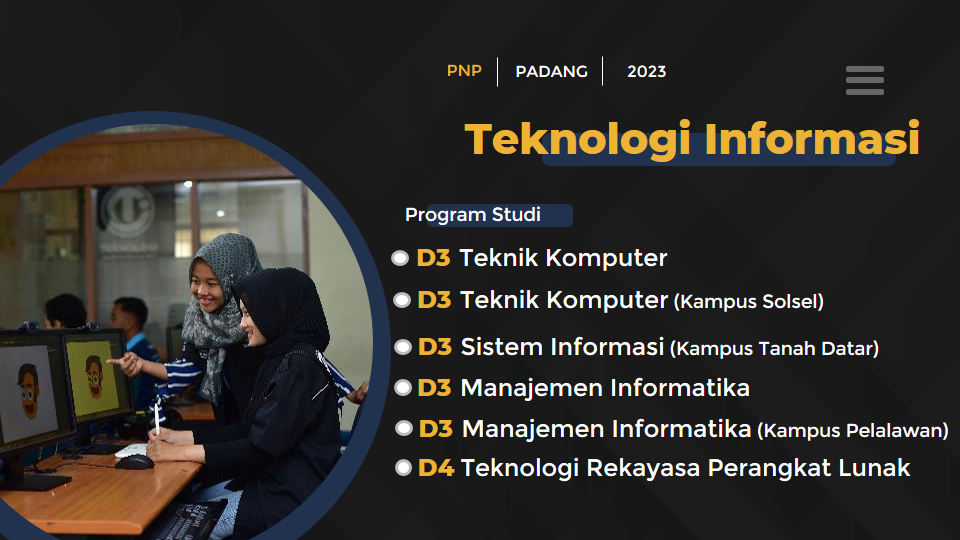

Welcome To Teknologi Informasi
Teknologi Informasi/TI menghasilkan tenaga kerja professional tingkat ahli di bidang Teknologi Informasi, khususnya pengelolaan Informasi berbasis komputer sehingga mampu bekerja di berbagai instalasi, perkantoran organisasi dan bisnis modern.
Jurusan Teknologi Informasi memiliki fasilitas yang lengkap seperti Air Conditioner (AC), LED proyektor, Labor komputer dengan spesifikasi yang lumayan tinggi, lingkungan yang nyaman dan lingkungan yang baik saat pelaksanaan pembelajaran.
Profil Teknologi Informasi
